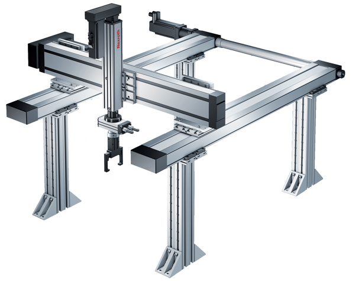
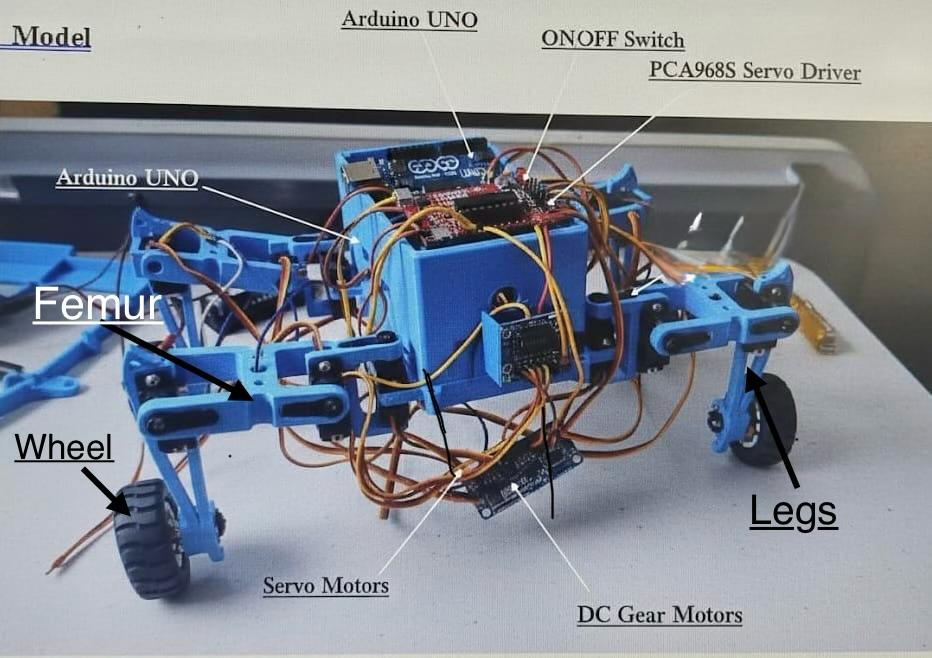
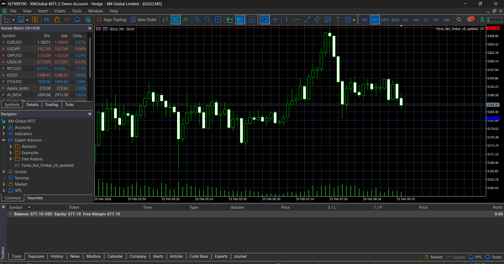

Projects
Cartesian Coordinate Robot

- Designed and built a 3-axis Cartesian robot for precise pick-and-place and CNC applications.
- Utilized stepper/servo motors and Arduino/PLC for motion control.
- Implemented G-code programming with ±0.1mm accuracy.
- Integrated grippers and sensors for automation tasks.
Hybrid Quadruped Robot with Wheeled Locomotion

- Developed a hybrid robot capable of legged and wheeled movement.
- Designed mechanical structure and integrated motors and sensors.
- Ensured stability on rough terrain and smooth movement on flat surfaces.
- Implemented adaptive terrain-based movement control.
Algorithmic EA Trading Bot

- Developed an automated Expert Advisor (EA) trading bot using algorithmic strategies.
- Implemented rule-based trade execution with risk management logic.
- Integrated technical indicators for entry and exit signals.
- Designed the system for fully automated decision-making and trade management.
AI Resume Analyzer

- Developed an AI-based Resume Analyzer using Python to evaluate resumes and provide intelligent feedback.
- Implemented resume scoring system based on skills, experience, and formatting.
- Built interactive web interface using Streamlit for real-time analysis.
- Helps users improve resume quality through structured insights and suggestions.